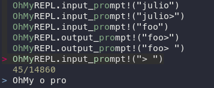

Fuzzy REPL history search

By default (on Julia 1.3+), OhMyREPL will use fzf to search in the REPL history (initiated by pressing Ctrl-R).
This is a fuzzy searcher which means that you don't need to verbatim enter what you want to match. So if you wrote @eval Base foo(x) = x+1 at some time you can search for e.g. @eval foo to find it.
Arrow keys can be used to navigate the visible search results. Hitting Enter will recall the currently selected line. The TAB key can be used to instead toggle selection of individual history entries, in which case only selected entries are recalled (in the order they were selected, which is not necessarily their original order in the history). Hitting TAB multiple times (or holding it) will select consecutive entries in the history, and Shift+TAB does the same but in reverse order.
Mouse scrolling is supported, as is click to select an individual line. Double-clicking is equivalent to pressing Enter.
The number of search hits and overall size of the history are shown on a status line below the history results.
Pressing the Escape key cancels the history search.
This feature can be turned on/off using enable_fzf(::Bool).